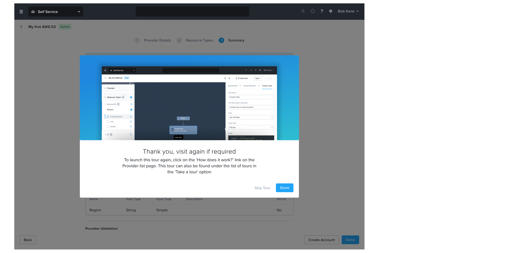
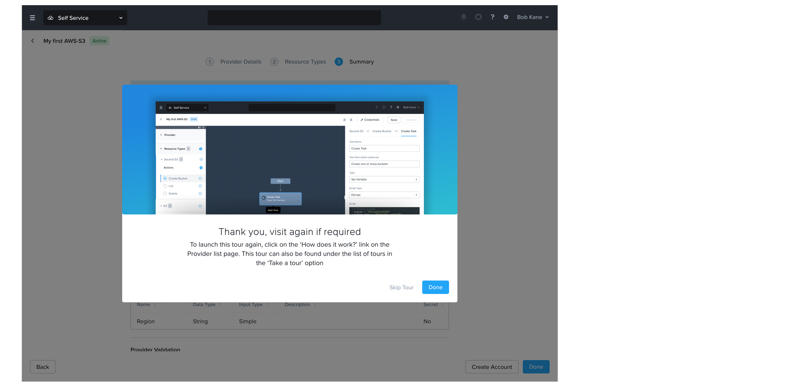

Context
NUTANIX
Nutanix builds cloud infrastructure software for enterprises running hybrid and multi-cloud environments.
SELF SERVICE
Within Nutanix Cloud Manager (NCM), Self Service is a tool that helps Cloud Ops and IT Admins to orchestrate and automate tasks like setting up servers, managing application lifecycles end-to-end, and running cloud services.
THE GAP
Nutanix natively supports 5 Providers and allows you to manage only compute resources.
BUSINESS PROBLEM
Today's enterprise customers have multi-cloud + hybrid setups, niche clouds like Alibaba and more workload types (databases, storage files, networks) than Nutanix's native integrations could cover.
Equip the product with robust capabilities that can help customers quickly onboard new cloud platforms and manage the workloads on top of it.
USER PROBLEM
Native providers didn't cover key workloads(database, network, storage). Native support was only for compute resources. Users used eScripts and APIs as hacky solutions, which generally worked for Day-0; but these failed for Day-2 management and operations because the platform lacked resource semantics.
- Be able to connect to the hybrid could accounts of their choice.
- Use Self Service's automation and orchestration capabilities to manage end-to-end lifecycle of their database, storage, and other resource workloads.
The Solution
CUSTOM PROVIDER
Custom Provider is a way for Cloud Ops teams to extend Nutanix Self-Service to manage any
external workload—not just the ones the product supports out of the box. It lets an admin
define: how to connect to a system, what "things"(resources) exist in it, and what
actions can be run on those things—so the platform can automate them safely and
repeatedly.
First of a kind GUI editor! No template for a “mix & match infra creator” existed so far
in the market.
MY ROLE
Sole designer for Custom Provider Builder - an extensibility workflow that lets Cloud Ops teams onboard any cloud provider and any workload (DB/storage/network) beyond native provider support. Owned end-to-end UX for a GUI mix-n-match entity builder— UX strategy → flows → interaction model → UI → validation → handoff
IMPACT
Reduced friction to extend Self-Service beyond built-in providers; positioned the product for broader TAM

Design
Considering I can’t get into the details of use-cases and designs due to an NDA, and since the designs covers multiple flows and is very extensive in nature, I'll be sharing a few screenshots and flows that capture the major UX problems that I've designed for and how certain aspects of the design evolved over time. Always up to dive more over coffee :)
UX PROBLEMS
- Designed a learnable mental model for a complex extensibility framework by introducing a Provider → Resource → Action → Task hierarchy with breadcrumbs for orientation and navigation.
- Made ‘programmable power’ usable. The builder turns code-like concepts into composable, stepwise decisions (auth → resources → actions → inputs/outputs → verify).
- While pro users could easily learn and use the GUI builder, there were still a lot of users who would be new to the product, the feature, it’s concepts and terminologies.
- In testing with 6 Service Engineers, we found the power-user builder was cognitively heavy. So designed a separate first-time wizard flow so that users have a easier learning curve when they first sign into the mental model.
- Designed a dedicated interactive onboarding flow for the feature.
- Since the product was new and tech heavy, we decided to re-work the existing onboarding patterns being used in the product as we wanted a more interactive onboarding experience for the users.
 

Glossary
For all further purposes, here is a small glossary
A connector that lets Self-Service talk to another system (AWS, databases, internal tools)
A "thing" in that system you want to manage (bucket, database, VM)
An operation you can perform on a resource (create, delete, resize, backup).
The scripted steps that execute an action reliably (API calls, scripts, runbooks).
Coordinating multiple actions in the right order across systems.
A reusable recipe for provisioning something end-to-end (what to create + in what order).